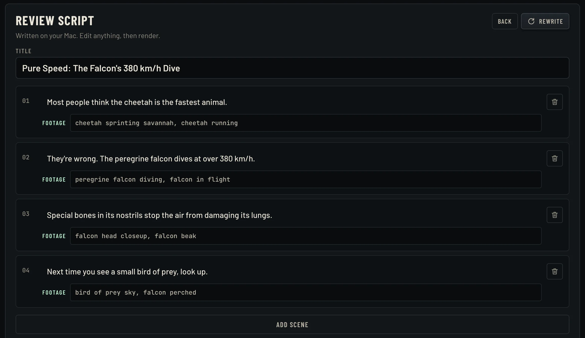

Faceless videos, made on your computer.
Idea in, finished Short out: written, voiced, captioned and scored on your Mac or Windows PC.
Launch price, $79 after. Pay once, make unlimited videos.
Press a template to see what TallyReel made
From idea to posted, in four steps
-
01
Type an idea, or paste your script
Pick one of eight templates (facts, dark history, motivation, real estate, local business and more) or write every word yourself.
-
02
~1 min
Review the script
TallyReel writes a hook-first script and plans the footage for each scene. Change any line, and tell it exactly what to show.
-
03
~1 min
Render
A natural voice reads it, matching stock footage is found, every word is captioned as it's spoken, and a music bed is mixed underneath.
-
04
Post it
Download the MP4 with a title, caption and hashtags ready to copy. Or queue up to 50 ideas at once and come back to a full library.
Your words, or ours. You approve every line.
AI scripts are a starting point, not a final cut. Before anything renders, you see the whole script scene by scene with the footage each scene will search for. Rewrite a line, swap the shot, add or drop a scene.
Already have a script? Paste it. TallyReel keeps your words exactly as written and only plans the footage, title and hashtags around them.

Six niches, six real videos
Each one made by TallyReel from a single idea. Tap to play with sound.
Not just Shorts
Switch to YouTube 16:9 for videos up to 15 minutes, written chapter by chapter with timestamps and a thumbnail. Or let two AI hosts talk it through, with their mouths moving in time on an Apple silicon Mac.
Made from one line: "Why the Eiffel Tower was almost torn down." Script, voices, hosts, footage, captions and music, all on the machine that made it.
Runs on your computer. No credits, no meter.
The heavy lifting happens on your own machine, so there's nothing to ration. Make ten videos or ten thousand.
- Script writer
- Qwen AI model, on your computer — or your own AI key
- Voices
- 9 natural US and UK voices, on your computer
- Your own voice
- Clone it from a one-minute recording, on your computer
- Fact research
- Scripts take their facts from Wikipedia (needs internet)
- Captions
- Word-timed with Whisper, on your computer
- Music and render
- Composed and mixed on your computer, or bring your own tracks
- Stock footage
- Pexels, with your own free key (needs internet)
One price. Yours to keep.
$49$79
Launch price. $79 after launch.
One-time purchase. No subscription.
- Unlimited videos
- 8 templates, 9 voices, 3 music moods
- Clone your own voice
- Shorts and full 16:9 YouTube videos up to 15 minutes, with chapters
- Two-host AI podcasts and presenter videos
- Talking hosts whose mouths move (Apple silicon)
- Write your own scripts or edit the AI's
- Use the built-in AI free, or plug in your own AI key
- Batch up to 50 videos at a time
- Titles, captions and hashtags for every video
The trial makes three full videos, watermark-free. Buying unlocks it for good on two computers.
For Macs with Apple silicon (M1 or newer) and 64-bit Windows 10 or 11 PCs. 16 GB of memory recommended, and about 12 GB of free space for the AI models.
Questions
Will my Mac or PC warn me when I open it?
The first time, yes: TallyReel isn't signed with Apple's or Microsoft's paid certificates yet, so they ask you to confirm. It takes one click in Settings on a Mac or "Run anyway" on Windows. The install guide shows exactly where.
Does it work on Windows?
Yes. TallyReel runs on 64-bit Windows 10 and 11 as well as Macs with Apple silicon. One purchase, same features.
Can I use my own AI key instead?
Yes, and it's optional. TallyReel writes scripts on your computer for free, with no key and no metering. If you'd rather not download the 3 GB script model, or you want sharper writing and a faster machine, paste a key from Anthropic, OpenAI, DeepSeek or OpenRouter in Settings — or point it at Ollama or LM Studio on your own network. You then pay that service directly, usually a few cents a video. Everything else — voices, captions, footage, rendering — still happens on your computer.
Can it make long YouTube videos?
Yes. Pick YouTube 16:9 and a length of 3, 5, 10 or 15 minutes. TallyReel researches the topic, outlines it into chapters, writes each one, and cuts between fresh footage every few seconds. You get the video, a thumbnail, and a description with chapter timestamps. A 10-minute video takes about 15 to 30 minutes on an M-series Mac, depending on its memory and what else is running.
Can it make podcasts or videos with a presenter?
Yes. Podcast mode writes a conversation between two AI hosts and shows them in a studio layout, cutting to footage when they describe something. Presenter mode has one host talking to camera. Hosts are made-up AI people with their own look and voice, and either can use your cloned voice. On an Apple silicon Mac you can switch on talking hosts, where their mouths move with what they say; it needs a one-time 3.7 GB download and adds roughly seven times the talking time to a render. On Windows the hosts are still pictures with captions and a live waveform.
Can it use my own voice?
Yes, on Mac and Windows. Record about a minute of yourself talking, read a short consent sentence, and TallyReel clones your voice on your computer. Your recordings never leave it. You can only clone your own voice, and every cloned clip carries an inaudible AI watermark. A graphics card or Apple silicon makes it much faster; on a PC without one, cloned narration takes a few minutes per video.
Do I need to be online?
Script writing, voices, captions, music and rendering all run on your computer. Finding stock footage needs an internet connection, and so does the optional AI-image mode.
How long does a video take?
On an M-series Mac, about a minute and a half for a 30–40 second video with stock footage: roughly 40 seconds to write the script and a minute to render. On a Windows PC, script writing takes one to three minutes depending on the processor. AI-image mode takes several minutes.
Can I use my own script?
Yes. Paste it in and TallyReel keeps every word as written. It splits it into scenes, plans footage for each one and writes a title, caption and hashtags. You can edit all of it before rendering.
What if the footage doesn't match?
Every scene shows the footage search it will use, and you can change it before rendering. Tell it "falcon diving" and that's what it looks for.
Where does the footage come from?
Pexels, a free stock video library. You'll need a free Pexels API key, which takes about a minute to get. Pexels videos are free to use under the Pexels license.
Can I use my own music?
Yes. Drop MP3, WAV or M4A files into your music folder and pick "My tracks". Or use one of the three music moods TallyReel composes for each video.